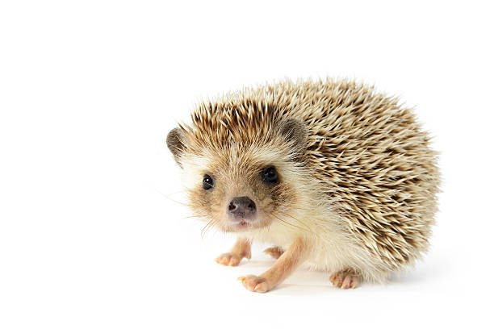
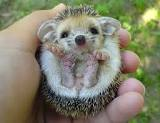

Hedgehogs (genus Erinaceidae) are spiny mammals which are primarily active during the day. They feed on insects, berries, melons, eggs, frogs, toads, and mushrooms. Hedgehogs are also domesticated, making for a fun and low-maintenance pet. Although their spines aren't cuddly, hedgehogs make friendly and playful pets.
 